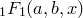
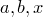
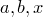
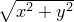

Bayes’ Theorem states that:
|  | (C.1) |
Since we are only seeking to maximise the quantity on the left, and the denominator, termed the Bayesian evidence, is independent of  , we can neglect it and replace the equality sign with a proportionality sign. Furthermore, if we assume a uniform prior, that is, we assume that we have no prior knowledge to bias us towards certain more favoured values of , then
, we can neglect it and replace the equality sign with a proportionality sign. Furthermore, if we assume a uniform prior, that is, we assume that we have no prior knowledge to bias us towards certain more favoured values of , then  is also a constant which can be neglected. We conclude that maximising  is equivalent to maximising
is also a constant which can be neglected. We conclude that maximising  is equivalent to maximising  .
.
Since we are assuming  to be Gaussian-distributed observations of the true function
to be Gaussian-distributed observations of the true function  , this latter probability can be written as a product of
, this latter probability can be written as a product of  Gaussian distributions:
Gaussian distributions:
![\begin{equation} \mathrm{P}\left( \left\{ f_ i \right\} | \mathbf{u}, \left\{ \mathbf{x}_ i, \sigma _ i \right\} \right) = \prod _{i=0}^{n_\mathrm {d}-1} \frac{1}{\sigma _ i\sqrt {2\pi }} \exp \left( \frac{ -\left[f_ i - f_\mathbf {u}(\mathbf{x}_ i)\right]^2 }{ 2 \sigma _ i^2 } \right) \end{equation}](images/img-0681.png) |
(C.2) |
The product in this equation can be converted into a more computationally workable sum by taking the logarithm of both sides. Since logarithms are monotonically increasing functions, maximising a probability is equivalent to maximising its logarithm. We may write the logarithm of as:
![\begin{equation} L = \sum _{i=0}^{n_\mathrm {d}-1} \left( \frac{ -\left[f_ i - f_\mathbf {u}(\mathbf{x}_ i)\right]^2 }{ 2 \sigma _ i^2 } \right) + k \end{equation}](images/img-0682.png) |
(C.3) |
where is some constant which does not affect the maximisation process. It is this quantity, the familiar sum-of-square-residuals, that we numerically maximise to find our best-fitting set of parameters, which I shall refer to from here on as .